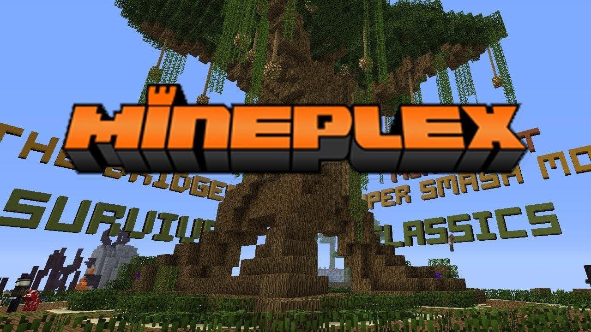

Založil se 24 Ledna 2013
Místo původu jsou Spojené státy americké
Zakladatelé serveru jsou Sterling_ a Spu_
počet unikátních hráčů: Neznámé, možná miliony; více než 525 000 uživatelů je registrováno na fórech Mineplex
Server je dokonce uveden jako oficiální partner Minecraftu na svých webových stránkách.
Aby vše fungovalo hladce, prodává Mineplex svou vlastní herní cosmetics, která pomáhá platit náklady na server, vývoj světa, vývoj pluginů a dárky
bohužel v současný době na Mineplexu hraje jenom cca 30-50 hráčů
